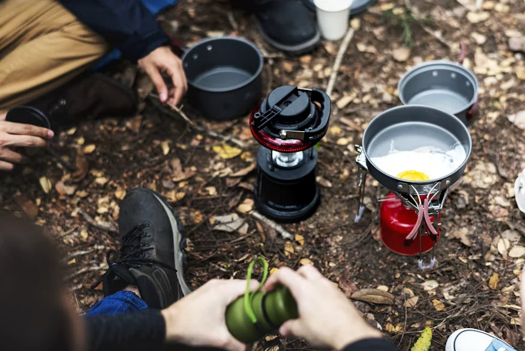
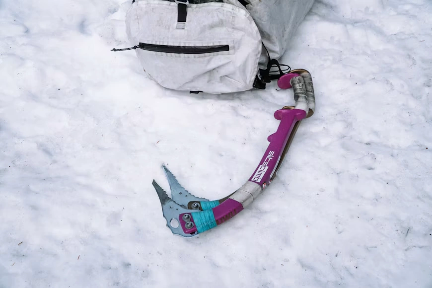
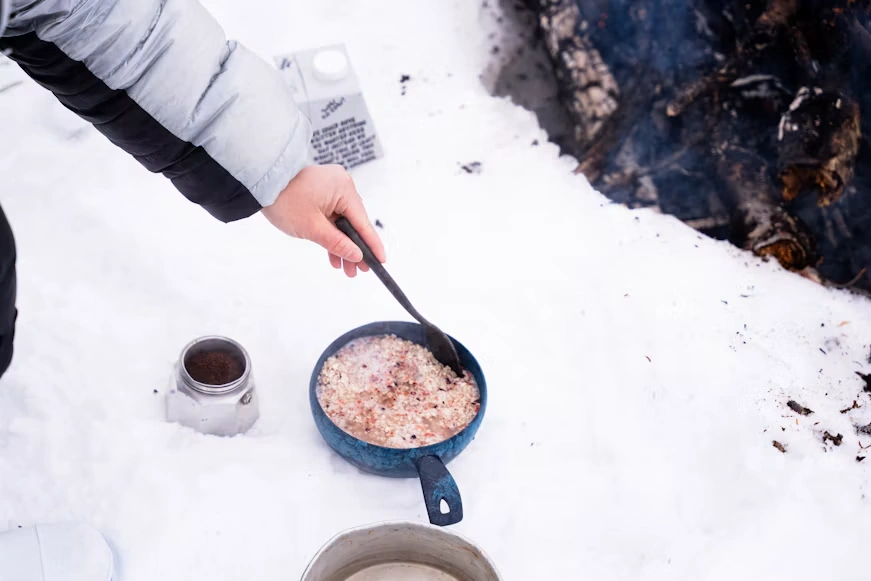

Recent dispatches
Nine pieces we
logged this quarter.
Long reads, not news. Each one names the author, the dates walked, the kit carried and the revision the piece has been corrected to. Filter by topic or format, then read in whatever order the trail gave us.
268 pieces and counting
Corrections posted inline
 Field Notes
Field Notes
11 min readMar 2026
Field Notes11 min14 March 2026
What actually happens when a flysheet delaminates at 3,900 m
Six hours of rain, one seam that let go, and the four repair decisions we made in the dark with numb hands.
Marit Hallgrímsdóttir
Routes
16 min readFeb 2026
Routes16 min2 February 2026
The Wind River high loop: nine camps, four permits, one wrong turn
Permit blocks, water sources, and the junction at 41°27.3’N that three parties read differently.
Tomas Iverson

Repair Logs
7 min read28 January 2026
Repair Logs7 min28 January 2026
A wood stove that will not light is almost always a gasket problem
Ninety per cent of the failures we get sent are one part. How to test it in the field in under four minutes.
Priya Nandakumar

Safety
13 min read12 January 2026
Safety13 min12 January 2026
Snow anchors that actually hold, and the four that pulled first
Pull tests on 28 anchors, at -11 °C, with the load figures written down rather than remembered.
Dario Kellerman
 Gear Tests
Gear Tests
18 min read19 December 2025
Gear Tests18 min19 December 2025
Down versus synthetic at -24 °C: forty nights of sleep data
Fill power, loft recovery and the seven nights synthetic won outright. Logs published in full.
Anneke Brandt
 Field Notes
Field Notes
6 min read30 November 2025
Field Notes6 min30 November 2025
Leave No Trace, properly: the checklist we actually run
Food storage, fire rings, catholes and the grey area that most guides simply skip over.
Cole Mbeki
 Gear Tests
Gear Tests
9 min read8 November 2025
Gear Tests9 min8 November 2025
Charging a phone in winter: forty hours of solar measurements
Panel angle, snow cover and the panel orientation that finally beat a flat lid at 4,000 m.
Yusuf Karimi
Campfire Stories
12 min read21 October 2025
Campfire Stories12 min21 October 2025
The col we turned back from, and why the map said keep going
A first solo traverse, a rising east wind, and the four hours spent deciding to reverse.
Marit Hallgrímsdóttir

Campfire Stories
10 min read4 October 2025
Campfire Stories10 min4 October 2025
Freeze-dried versus dehydrated: four hundred grams of dinner, measured
Calories, rehydration time at altitude, and the fuel cost of boiling water for either one.
Elena Ruiz
.webp)